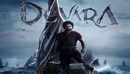
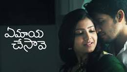
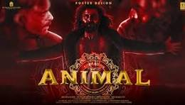
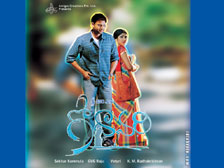
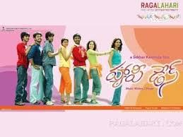
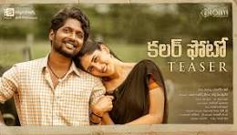

|  |  |  | ||
| Devara movie | ye maaya cheesava movie | Animal Movie | ||
|---|---|---|---|---|
| Devara has a simple and predictable story. It struggles a bit with the editing and direction. NTR's hard work and Anirudh's powerful music make it worth watching. |
Ye maya chesave is the one of the best films. Innocent and pure love is depicted throughout the movie.The movie also portrays the struggle of a guy who aspires to be a film director. |
“Animal” (2023) is a remarkable cinematic experience
that redefines the animal genre with its powerful narrative and striking visuals.This film is a testament to the profound connection between humans and animals. |
||
|  |  |  | ||
| Godavari movie | Happy Days movie | Color PhotoMovie | ||
| A family from Nashik that is struggling
to come in terms with two deaths and as they grieve, they find solace in each other and the river Godavari. |
It is about ragging, friends, and relationships during college.
I think it is a wonderful idea in general to create a movie with good actors who portray life in college as a time which brings about so many new experiences, if they may be good or bad. |
It is based on real-life incidents of the film's story
writer Sai Rajesh. A reviewer of TeluguCinema stated that the film is all about 'Colour'. He further added that Colour Photo deals with colourism, and boasts good dialogue writing. |
||
| Information about Solar System | ||||
| Click here to open my Resume |